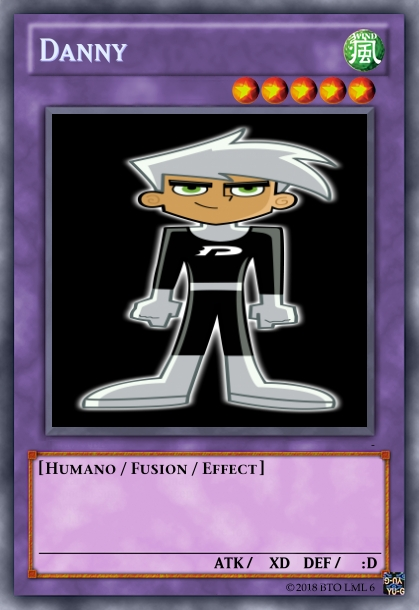
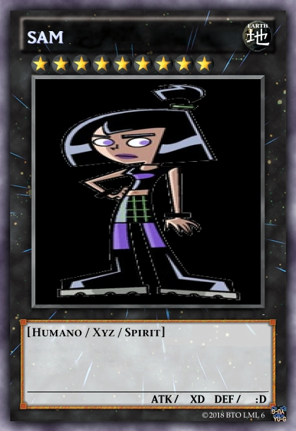
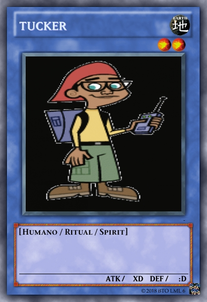
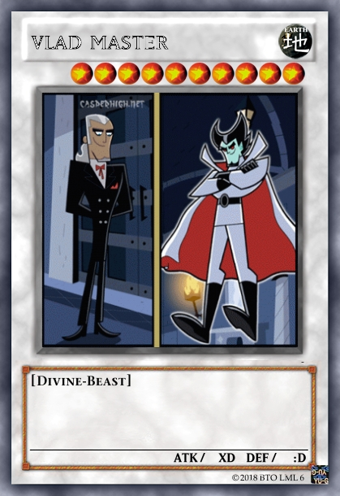

Danny Phantom fue una serie animada de televisión creada por Butch Hartman, también creador de Los padrinos mágicos y T.U.F.F Puppy para Nickelodeon, producida por los Estudios Billionfold y distribuida por la compañía Nelvana.
El personaje principal, Danny Phantom, echa un vistazo a un portal fantasma creado por sus padres, y por accidente se vuelve mitad humano y mitad fantasma. Se llamaba "Bill el invisible" durante la primera temporada, ahora utiliza el sobrenombre Danny Phantom desde la segunda temporada en adelante. Él tiene que luchar con la ayuda de sus amigos para atrapar a los fantasmas y hacer que regresen a la zona fantasma, mientras que lucha día a día en el agonizante mundo adolescente.
 
 